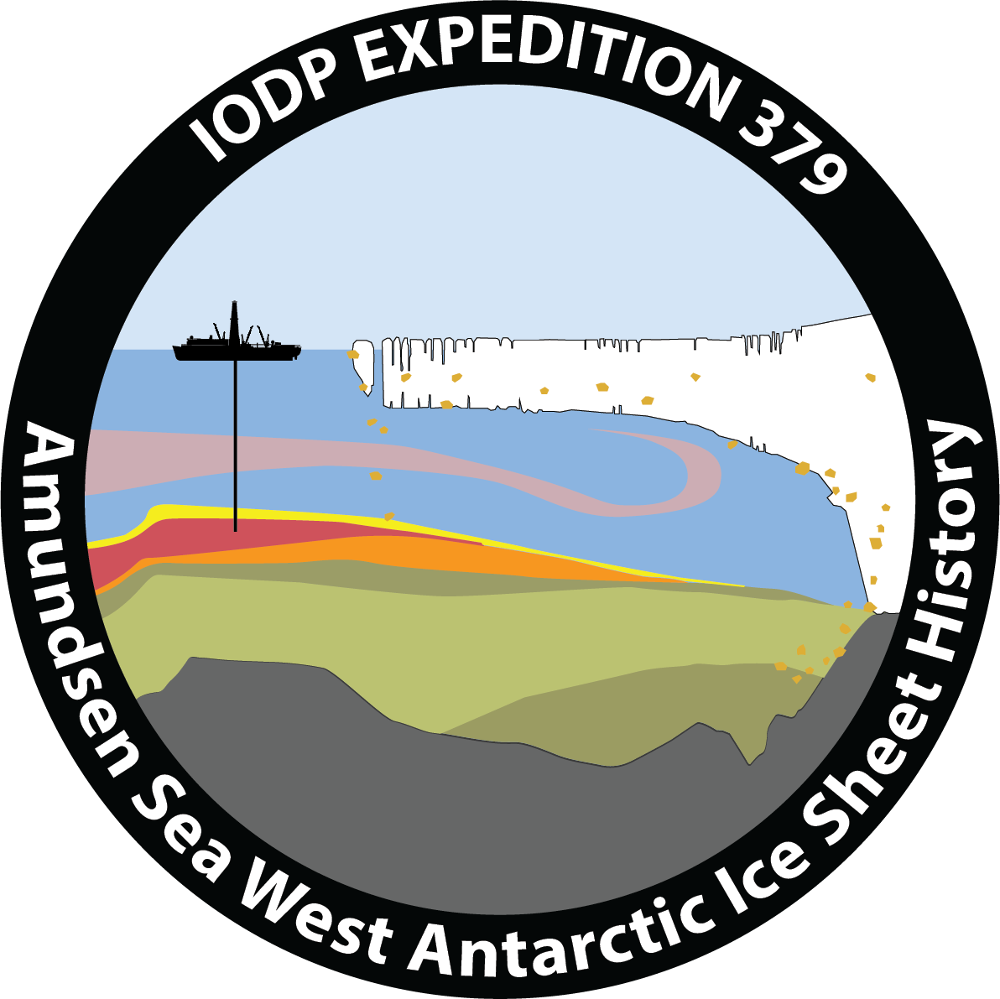
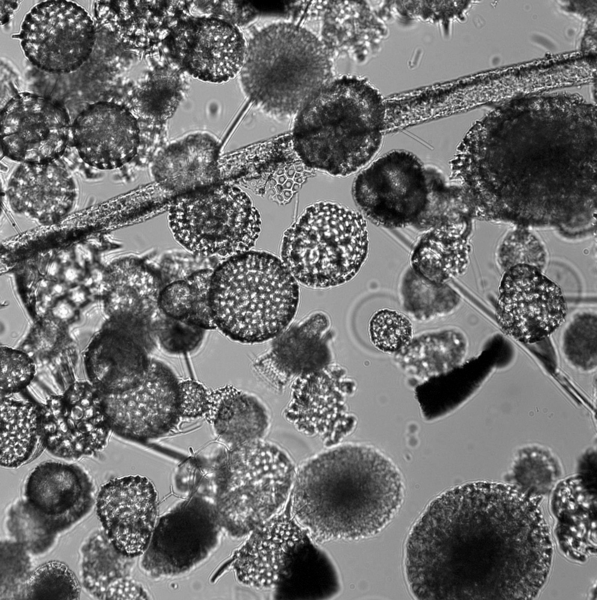
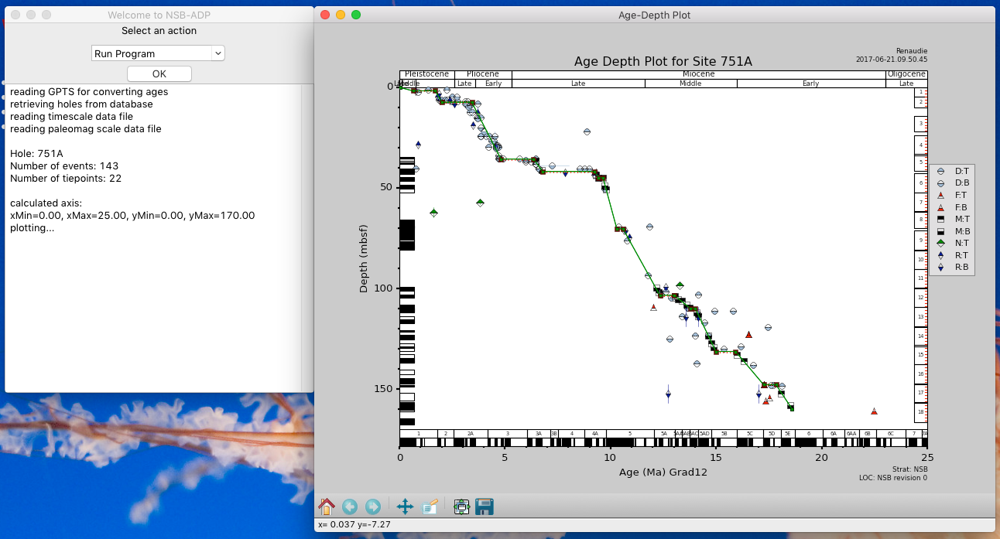
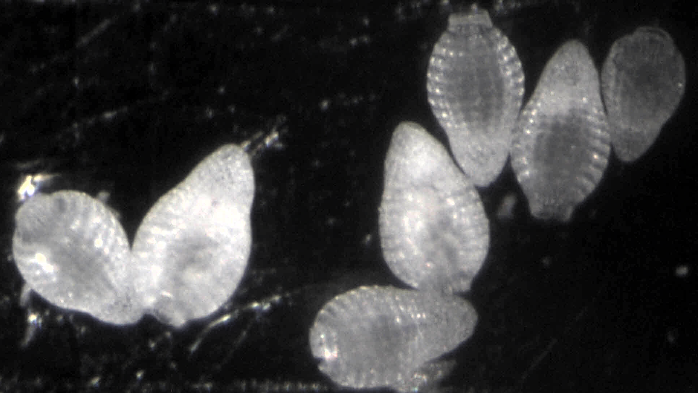

A (very) short word on some of my current projects:
- Polar Oceans, Plankton and Oceanic Carbon Sequestration in a Warm, High $p_{\mathrm{CO}_2}$ World (DAAD MOPGA-GRI with Gayane Asatryan and David Lazarus):
The basic model that we examine is:
(tectonically driven) changes in ocean circulation + increases in weathering -> increased polar ocean areal extent, more ocean nutrients, and, via evolution, more polar diatoms -> increases in global plankton export productivity, particularly in high latitudes -> drawdown of $p_{\mathrm{CO}_2}$.
Our project specifically poses the three following main questions which, if answered, can be assembled to test this model:
1. How much did the polar oceans, particularly the Southern Ocean, increase in areal extent between the Eocene and Oligocene, and was the areal expansion associated with the development of intermediate water transport from high to low latitudes?
2. How did ocean export productivity change between the Eocene and Oligocene; what role did enlarged polar oceans play in this, and how did the relative contribution of diatoms vs coccolithophores to export productivity change?
3. What effect did these changes in polar ocean environments have on the evolution, and particularly speciation and extinction, of species of siliceous plankton? Are major changes in ocean temperature or productivity associated with significant extinction events in these groups?
The questions are addressed by data generated from several work packages (radiolarian faunas; diatom floras; sediment composition and accumulation rates; carbonate geochemistry/benthic foraminifera accumulation rates; and ocean circulation and biogeochemistry modelling). - Diatoms, radiolarians and the Cenozoic carbon and silicon cycles:
The goal of this project is to estimate the mass of siliceous microfossils that deposited since the middle Eocene in the world's sediments, in order to constrain the Cenozoic fluctuations in the volume of the marine silicon cycle, and to test quantitatively the hypothesis according to which the Cenozoic expansion of diatoms impacted the global carbon cycle on a geological timescale. - Late Neogene radiolarians from the Amundsen Sea:
Following IODP Expedition 379, I will study the radiolarian fauna found there, in particular its diversity and the biogeography of the concerned species. I will also take the opportunity of the good chronostratigraphy of the recovered sediments to update Plio-Pleistocene antarctic radiolarian biostratigraphy.  Radiolarians from the mudline of Hole U1533D.
- nsb_adp_wx.py and NSB age model quality:
As a companion to the Neptune database (NSB), I am developing an interactive software allowing the user to check the database's age models and how they were built, to modify them, to create new ones, etc.
We are currently in the process of testing the quality of the age models in NSB: nsb_adp_wx is already an invaluable tool for us to explore alternative age models to replace those of poor quality.Screenshot of nsb_adp_wx in use.
The original software was written in True Basic by David Lazarus (Lazarus, 1992). During the Chronos project era, a Java version was written by Geoffrey Bohling (Bohling 2005). The current python implementation was first written by Pat Diver, while I ported it to wxPython and extended its functionalities.
Furthermore, on the subject of NSB, I am also currently writing a manuscript summarizing the current state of the database, the changes made to it since I started participating in its development and the rationale for those changes, as well as the steps taken to ensure the quality of the data present in the database. - Testing the vital effect in silicon isotopes measured on Late Eocene radiolarians (a collaboration with G. Fontorbe, P. Frings and D. Conley from the University of Lund):
The idea is to first check the validity of the $\delta^{30}\mathrm{Si}$ radiolarian proxy and, second, to test if each species $\delta^{30}\mathrm{Si}$ record vary according to its living depth (which will allow us not only to estimate the living depth of many species for which this is unknown but also to reconstruct the past marine silicon cycle in 3D).Some Dictyoprora mongolfieri picked for the analysis.
- Monograph on Carpocaniidae:
This small group of Nasselarian radiolarians being often ignored by most researchers (often reduced to a "Carpocanium spp." mention), I am trying to revise its alpha taxonomy, understand its Bauplan, the limits of the group and its relationship with Artostrobiidae and Cannobotryidae, as well as document its biogeography and stratigraphy, through a systematic exploration of the material present in Berlin's MRC collection.